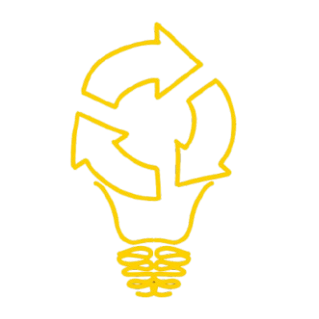
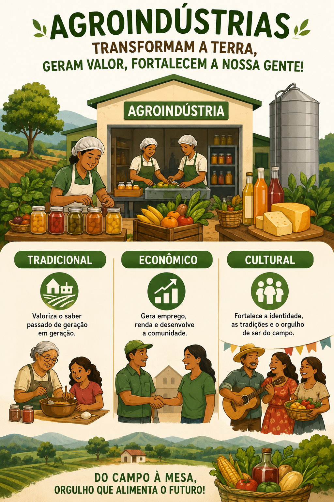
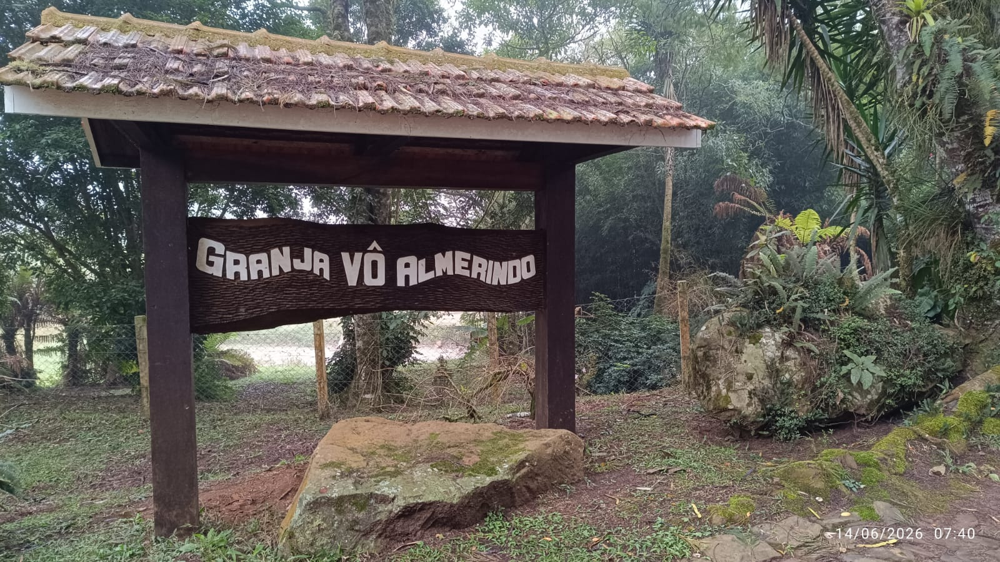

01
Herança e Produção Rural
A jornada começa com o trabalho familiar, onde a cultura e a identidade rural agregam valor aos produtos in natura. É o cuidado com a terra que garante alimentos seguros para as cidades.

Onde a energia conecta, o futuro floresce.
Para começar, digite seu nome:
O nome está correto?
Neste site, você vai descobrir como é possível encontrar o equilíbrio entre produção e meio ambiente e como juntos podemos ir mais longe em busca de um futuro sustentável.
Tá pronto(a), ?
As agroindústrias familiares são um motor vital da economia brasileira. Segundo o Censo Agropecuário de 2017 (IBGE), elas representam 85,9% de todos os estabelecimentos agroindustriais do Brasil. Juntas, elas garantem a segurança alimentar de milhões de pessoas e movimentam uma cadeia que responde por cerca de 22% do PIB nacional, gerando mais de 16 milhões de postos de trabalho. O futuro sustentável nasce quando a inovação tecnológica transforma o peso dos resíduos industriais na leveza da energia renovável.

A cadeia que conecta o campo, a indústria e a cidade através da sustentabilidade.
A jornada começa com o trabalho familiar, onde a cultura e a identidade rural agregam valor aos produtos in natura. É o cuidado com a terra que garante alimentos seguros para as cidades.
Ao transformar carne e outros alimentos, geram-se grandes volumes de resíduos mensais (ossos, gorduras e efluentes). Jogar esses resíduos no meio ambiente sem tratamento danifica a saúde do solo, contamina rios e mata a biodiversidade local.
A resolução está na economia circular. O que antes era descarte passa a ser insumo para a geração de bioenergia, reduzindo a dependência externa e barateando o produto final que chega à mesa do consumidor.
Uma visão dos impactos que uma agroindustria local pode ter na comunidade.

O inicio é apenas um sonho de uma familia local, depois uma cultura se desenvolve
🎧 Ouça a história da agroindústria local
Pequenos fatos que ajudam a entender a relevância da agroindústria e do reaproveitamento energético.
Força Econômica: A agroindústria representa 22% do PIB brasileiro e gera cerca de 16 milhões de empregos. É um dos setores mais potentes do país, comparável ao petrolífero.
A resolução do problema dos resíduos através da inovação energética.
O descarte de grandes quantidades de matéria orgânica e efluentes sem tratamento danifica a saúde do solo e a vida nos rios, além de favorecer queimadas e desmatamentos em áreas de expansão desordenada.
Ao utilizar biodigestores, a agroindústria neutraliza o impacto dos resíduos de carne e subprodutos. Esse processo gera biogás, eliminando o "lixo" e protegendo a água que abastece as cidades.
A longo prazo, a produção de energia própria anula o consumo de fontes externas, barateando o produto final e tornando a unidade produtiva um modelo de economia circular autossuficiente.
Este vídeo apresenta a potência economica e cultural das agroindústrias brasileira.
Uma forma divertida de revisar os principais conceitos sobre resíduos, biodigestores e agroenergia.